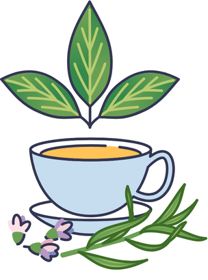
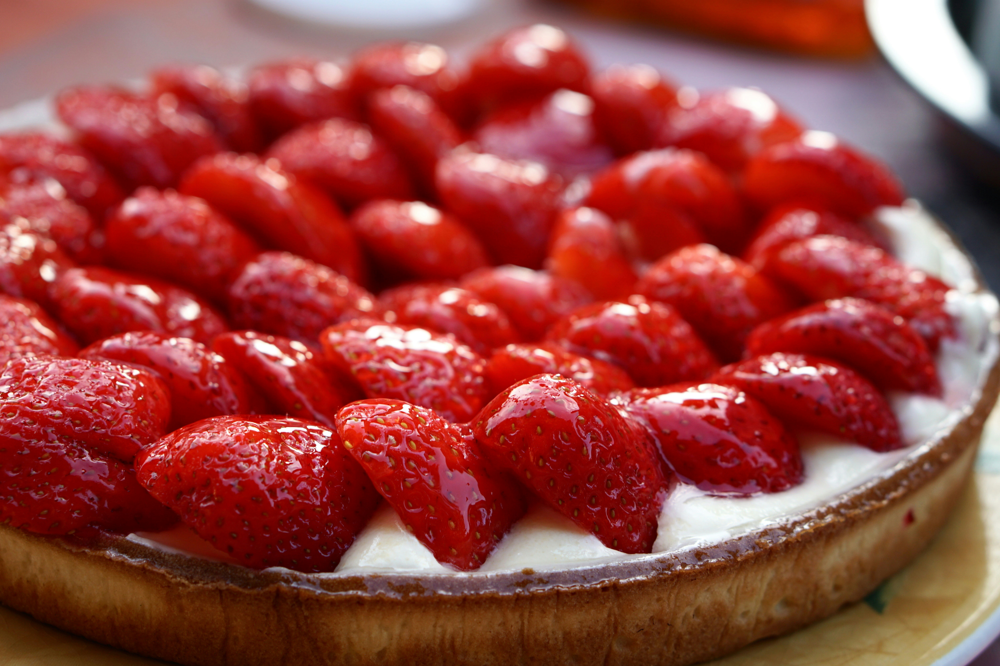

A single cup that can change the world.
Enjoy a coffee and a fresh homemade dessert while planting a tree for future generations.
Join our MissionOur Eco Friendly Mission


Pura Vida Café provides not only a wonderful experience, but also an amazing flavour in every cup of our coffee. Born in the heart of Gatineau, Canada, in 2000, our cafe has planted more than 500,000 trees to date. We specialize in handcrafted espresso drinks, organic teas, and daily fresh pastries. Our goal is to combat global deforestation while leaving a lasting positive impact on the hearts of our customers.

Cafe Latte
Price $2.50
Fresh strawberry tart
Price $2.50